Data.Monoid に Sum 型が定義されています。
newtype Sum a = Sum { getSum :: a }
instance Num a => Semigroup (Sum a) where
Sum a <> Sum b = Sum (a + b)
instance Num a => Monoid (Sum a) where
mempty = Sum 0使い方は簡単。
Data.Monoid に Last 型が定義されています。
newtype Last a = Last { getLast :: Maybe a }
instance Semigroup (Last a) where
a <> Last Nothing = a
_ <> b = b
instance Monoid (Last a) where
mempty = Last NothingLast モノイドは First モノイドとほとんど同じですが、<> で結合した時に最後の値を返すという部分が異なります。
使い方は簡単。
ghci> getLast (Last (Just "hello") <> mempty <> Last (Just "world"))
Just "world"
ghci> getLast $ foldMap Last [Just "hello", Nothing, Just "world"]
Just "world"Data.Monoid に First 型が定義されています。
newtype First a = First { getFirst :: Maybe a }
instance Semigroup (First a) where
First Nothing <> b = b
a <> _ = a
instance Monoid (First a) where
mempty = First NothingFirst モノイドは Endo や Dual モノイドとは定義の雰囲気が少し違いますね。
getFirst :: a ではなく getFirst :: Maybe a となっている使い方は簡単。
ghci> getFirst (First (Just "hello") <> mempty <> First (Just "world"))
Just "hello"
ghci> getFirst $ foldMap First [Just "hello", Nothing, Just "world"]
Just "hello"常に最初の値を返すという、一見意味の無さそうな First モノイドも実は便利に使えたりします。
Data.Monoid に Endo 型が定義されています。
Endo という名前は 自己準同型 (Endomorphism) に由来します。
newtype Endo a = Endo { appEndo :: a -> a }
instance Semigroup a => Semigroup (Endo a) where
Endo f <> Endo g = Endo (f . g)
instance Monoid (Endo a) where
mempty = Endo id使い方は簡単。
ghci> f = foldMap Endo [(+1), (*2), negate]
ghci> print $ appEndo f 5
-9
ghci> appEndo (Endo ("Hello, " ++) <> mempty <> Endo (++ "!")) "Haskell"
"Hello, Haskell!"
ghci> (appEndo $ foldMap Endo [("Hello, " ++), id, (++ "!")]) "Haskell"
"Hello, Haskell!"appEndo すると関数が出てくるところがポイントですね。2つ目の評価の流れをざっくり追うとこんな感じです。
appEndo (Endo ("Hello, " ++) <> Endo (++ "!")) "Haskell"
= appEndo (Endo (("Hello, " ++ ) . (++ "!"))) "Haskell"
= ("Hello, " ++ ) . (++ "!") $ "Haskell"
= "Hello, " ++ ("Haskell" ++ "!")
= "Hello, " ++ "Haskell!"
= "Hello, Haskell!"Endo は意外と色んなところで使える便利なモノイドです。
Data.Monoid に Dual 型が定義されています。
newtype Dual a = Dual { getDual :: a }
instance Semigroup a => Semigroup (Dual a) where
Dual a <> Dual b = Dual (b <> a)
instance Monoid a => Monoid (Dual a) where
mempty = Dual mempty使い方は簡単。
ghci> getDual $ Dual "aaa" <> mempty <> Dual "bbb"
"bbbaaa"
ghci> getDual $ foldMap Dual ["aaa", "bbb"]
"bbbaaa"いつか使う時もあるかもしれないので、適当な例を作ってみます。
最近少しずつ cabal を使うようになりました。
そのため、stack と cabal のどちらを使ってもビルドできるようにプロジェクトを修正していたのですが、cabal ファイルの取り扱いが難しかったのでメモ程度に残しておきます。
方針としては cabal コマンドの実行時にフックを仕掛けて hpack を使って package.yaml から cabal ファイルを生成しようという感じです。
10月18日に Stack version 1.9.1 がリリースされました。
更新は stack upgrade コマンドを実行します。
$ stack upgrade
Current Stack version: 1.7.1, available download version: 1.9.1
Newer version detected, downloading
Querying for archive location for platform: linux-x86_64-static
Downloading from: https://github.com/commercialhaskell/stack/releases/download/v1.9.1/stack-1.9.1-linux-x86_64-static.tar.gz
Download complete, testing executable
Version 1.9.1, Git revision f9d0042c141660e1d38f797e1d426be4a99b2a3c (6168 commits) x86_64 hpack-0.31.0
New stack executable available at /home/guchi/.local/bin/stack
Also copying stack executable to /usr/local/bin/stack
Permission error when trying to copy: /usr/local/bin: copyFile:atomicCopyFileContents:withReplacementFile:openBinaryTempFile: permission denied (Permission denied)
Should I try to perform the file copy using sudo? This may fail
Try using sudo? (y/n)実行ファイルは ~/.local/bin/stack と /usr/local/bin にインストールされます。
ただし、権限が無いと上記のように /usr/local/bin へのコピーに失敗するため sudo で再実行するか聞かれます。必要であれば y でインストールしましょう。
Try using sudo? (y/n) y
Going to run the following commands:
- sudo cp /home/guchi/.local/bin/stack /usr/local/bin/stack.tmp
- sudo mv /usr/local/bin/stack.tmp /usr/local/bin/stack
sudo file copy worked!インストールされるバージョンは以下の通りです。
$ stack --version
Version 1.9.1, Git revision f9d0042c141660e1d38f797e1d426be4a99b2a3c (6168 commits) x86_64 hpack-0.31.0気になる更新内容まとめ
Haskell のデバッグ手法については、以下の記事がとても詳しく参考になります。素晴らしい記事です。
今回はHaskellアプリケーションをデバックする際に、バックトレースのとても簡単な取得方法があったのでご紹介したいと思います。
まとめると以下の2行です。
$ stack build --profile
$ stack exec -- <exe_name> +RTS -xcまだまだ先の話ですが、extra-dep の書き方が Legacy syntax になりました。stack-1.11 からはビルドできなくなります。
以下の設定例は公式ドキュメントの例を少し変更したものです。
packages:
- .
- location:
git: https://github.com/bitemyapp/esqueleto.git
commit: 08c9b4cdf977d5bcd1baba046a007940c1940758
extra-dep: true
- location:
./submodules/haskell-lsp
extra-dep: true
subdirs:
- .
- haskell-lsp-types
extra-deps:
- streaming-commons-0.2.0.0修正方法は、設定ファイルの packages に extra-dep: true と指定している部分を、以下のように extra-deps へ追加するだけです。また、 subdirs を指定している場合は単純に分割して指定します。
packages:
- .
extra-deps:
- git: https://github.com/bitemyapp/esqueleto.git
commit: 08c9b4cdf977d5bcd1baba046a007940c1940758
- ./submodules/haskell-lsp
- ./submodules/haskell-lsp/haskell-lsp-types
- streaming-commons-0.2.0.0extra-deps の構文は従来の stack でも使えるので、今から対応しておいても問題ないと思います。
以上です。
Twitter で RecordWildCards の話が流れて来たので Reader モナドと組み合わせた例を1つご紹介します。
この書き方は @fumieval さんが使っていてカッコイイ書き方だなぁと思った記憶があります。
{-# LANGUAGE RecordWildCards #-}
data Person = Person
{ personName :: String
, personAge :: Int
}
func :: Reader Person ()
func = ask >>= \Person {..} -> $ do
... -- personName, personAge という名前でそのまま値を利用できるRecordWildCards に関しては既に色んな方が記事にしてくれているので、そちらをご参照ください。
Haskell でファイルやディレクトリを扱うプログラムを書く時によく使うパッケージとして filepath パッケージや directory パッケージがあります。(Haskell入門の「4.4 ファイルシステム」に directory パッケージの話が少し載っています。)
これらのパッケージは結局のところただの文字列操作なので、バグを出さないためにはパッケージ利用者がかなり注意深く使わなければなりません。
例えば、以下のようなパスは型レベルでは同じ文字列 (FilePath) ですが
-- 相対パス
pathRel :: FilePath
pathRel = ./aaa/bbb/ccc
-- 絶対パス
pathAbs :: FilePath
pathAbs = /home/user/aaa/bbb/ccc
-- ファイルへのパス
pathFile :: FilePath
pathFile = ./aaa/a.png
-- ディレクトリへのパス
pathDir :: FilePath
pathDir = ./aaaこのように、FilePath 型では相対パスなのか絶対パスなのか型レベルで判断する方法が無かったり、そもそもパスがファイルなのかディレクトリなのかすらわからなかったりします。
今回紹介するのは、型レベルでこれらをちゃんと分類できるようにしている path と path-io パッケージです。
型レベルで 相対パス or 絶対パス と ファイル or ディレクトリ を表現するため、不正な操作はコンパイル時にチェックできるようになります。
また、stack の内部でも利用していたので、実用しても大丈夫だと思います。
パッケージのバージョンは以下のとおりです
まだまだ更新が活発なパッケージなので、path-0.7 では破壊的変更を含む更新があるようです。(CHANGELOG)
難易度: λλ
以下のような二分木の定義があります。
以下の操作を定義してみましょう！
→ 
左の木に mirror 関数を適用すると、右の木を返します。
depth 関数で上記の木の高さを計算すると 3 になります。
上記の木は 平衡 です。
さらに Functor と Foldable のインスタンスを定義してみましょう！(ここでは fmap と foldMap を定義することにします。)
instance Functor a where
fmap :: (a -> b) -> Tree a -> Tree b
fmap = undefined
instance Foldable a where
foldMap :: Monoid m => (a -> m) -> Tree a -> m
foldMap = undefined答えは次回。
※ 図の作成には mermaidというツールを使っています。
Control.Arrow モジュールに (^>>) と (>>^) という演算子が定義されています。
ちょっとだけ面白かったので紹介しようと思います。
Yesod は Haskell で書かれた Web アプリケーションフレームワークです。
WordPress や Drupal と違って、セキュリティはかなり万全です。(ユーザが気にしなければならない部分が非常に少ないです)
最近、体系的に学ぶ 安全なWebアプリケーションの作り方 第2版 (通称: 徳丸本) が発売されました。
勉強のため、本書の内容を Yesod で確認しているのですが、その中で面白い例を見つけました。
今回はその内容について紹介したいと思います。(セキュリティの専門家ではないので間違いがあればご指摘ください)
難易度: λ
葉にだけ値を持つような二分木を定義してみてください！
図で書くとこんな感じです。

答えは次回。
この図は mermaid というツールを使って書きました。
Haskell プロジェクトの多くは Travis CI を使って CI を回しています。
しかしここ最近、いくつかのプロジェクトで Circle CI の利用が進んでいるように思います。
僕も社内のプロジェクトでは Circle CI を使っています。実際に Circle CI を使っていて個人的に良いなと感じたのは以下の4点です。
キャッシュの動作に関しては travis とは逆なので少し違和感があるかもしれませんが、キャッシュでCIが失敗するということが無くなるので、非常に良いと思います。
今回は Haskell プロジェクトで汎用的に使える Circle CI の設定をご紹介したいと思います。ただ、開発が進むにつれて色々とカスタマイズする必要が出てくると思いますので、今回参考にした設定ファイル等のリンクを参考資料として載せておきます。現実的に利用されている設定なので非常に役立つと思います。
参考にした config.yml
参考にした記事
難易度: λ
utf8.txt と shift-jis.txt はそれぞれ utf8 と shift-jis で保存されたテキストファイルです。
bad :: IO ()
bad = readFile "./shift-jis.txt" >>= putStrLn
good :: IO ()
good = readFile "./utf8.txt" >>= putStrLn上記のプログラムを実行すると、こんな感じでエラーになってしまいます。
*Main> good
はすける
*Main> bad
*** Exception: ./shift-jis.txt: hGetContents: invalid argument (invalid byte sequence)shift-jis で保存されたテキストファイルを読むにはどうしたら良いでしょうか？
答えは次回。
難易度: λλ
以下の2つのコードのうち、1つめはコンパイルできますが、2つめはコンパイルできません。
なぜでしょう！
#!/usr/bin/env stack
-- stack script --resolver lts-11.16
import Conduit
main :: IO ()
main = print $ runConduitPure $ return () .| do
mapM_ leftover [1..10]
sinkList#!/usr/bin/env stack
-- stack script --resolver lts-11.16
import Conduit
main :: IO ()
main = print $ runConduitPure $ do
mapM_ leftover [1..10]
sinkListエラーメッセージ
error:
• No instance for (Num ()) arising from the literal ‘1’
• In the expression: 1
In the second argument of ‘mapM_’, namely ‘[1 .. 10]’
In a stmt of a 'do' block: mapM_ leftover [1 .. 10]
mapM_ leftover [1..10]答えは次回。
つい先日 namespaced templates という、PRが master にマージされました。(Namespaced templates #4039 が該当する isssue です)
通常、stack new コマンドを実行すると、ローカルに保存されている new-template の内容に基づいてプロジェクトの雛形が作成されます。
もし、ローカルに保存されているテンプレートの内容を確認したい場合は以下のようなコマンドを実行すれば良いでしょう。
$ cat $(stack path --stack-root)/templates/new-template.hsfilesconfig.yaml を変更すれば、このデフォルトテンプレートを変更することもできます。(詳しくは config.yaml のよくある設定 をご確認ください)
今回新たに実装された namespaced templates 機能は、これらのテンプレート機能をより強化するものとなっています。
具体的には username/foo という形式でリモートリポジトリから自分のプロジェクトテンプレートをダウンロードし、それをもとにプロジェクトを作成できるようになります。
それでは使い方を見ていきたいと思います。
$ stack --version
Version 1.8.0, Git revision 466da22ce21cddc20323fc2611cd2a2d3cc56ec6 (dirty) (5998 commits) x86_64 hpack-0.28.2Continuation (継続) について全く勉強したことが無いので Control.Monad.Cont で定義されている ContT とかいつ使うんだろうなーと思っていましたが、ついに利用機会がありました！！！
僕が考えたんじゃなくて fumieval さんに相談して、教えてもらったんですけどね。
先日 stack の master ブランチに Introduce stack run command line option #3952 がマージされました。とても便利なので紹介したいと思います。
stack run コマンドについて簡単に説明するとこんな感じです。
stack build && stack exec foo の短縮形です。$ stack --version
Version 1.8.0, Git revision 466da22ce21cddc20323fc2611cd2a2d3cc56ec6 (dirty) (5998 commits) x86_64 hpack-0.28.2現在の stack の最新バージョンは 1.7.1 です。
つい最近 haskell-jp で 皆さんPreludeは何を使っていますか？ という話がありました。
まとめるとだいたこんな感じです。
| カスタム Prelude パッケージ | 利用しているプロジェクト |
|---|---|
| base-prelude | ??? |
| classy-prelude | Yesod |
| protolude | purescript |
| universum | cardano-sl |
| rio | stack |
カスタム Prelude を使うモチベーションは、自分のよく使う関数を Prelude に入れたいとか、fromJust みたいな部分関数を排除したいなど、色々あります。
実際にカスタム Prelude を使うためにはファイルの先頭に NoImplicitPrelude 言語拡張とカスタムPreludeの import 宣言を追加する必要があります。(具体例として rio パッケージを利用します)
新しいファイルを作るたびに、ファイルの先頭に上記の宣言を書いても良いのですが、今回はこの作業なしにカスタム Prelude を使う方法をご紹介したいと思います。
BIG MOON では、業務に必要なツールを自社開発しており、プログラミング言語に Haskell を採用しています。実用的に利用し始めて3年ぐらい？です。
僕らが Haskell を利用していて一番困った点はレコードの取り扱いです。
このような問題に対して extensible という、(当初は謎に包まれていた) パッケージの利用を検討し、実際に既存のシステムを extensible で置き換えました。(当時アルバイトしていた matsubara0507 さんが居なければ実現不可能だったと思います)
今回、縁あって作者の fumieval さんと一緒に仕事できる機会に恵まれました。fumieval さんは簡単な質問でも、とても気さくに答えてくれます。
僕達のノウハウはまだまだとても少ないですが、この素晴らしいパッケージを広く知って欲しいと思い、まだまだ作成途中ではありますが extensible 攻略Wiki という親しみやすい雰囲気で情報を発信していくことになりました。
この wiki もまた Haskell で作られており apus という名前で公開されています。
今回の extensible-0.4.9 のアップデートは、攻略wiki のコンテンツを拡充していく中で出てきたアイデアや、関数などがいくつか追加されました。(matsubara0507 さんと弊社も色々と貢献できているはずです！)
今回はその内容について簡単な例とともに解説を行いたいと思います。
vscode + Haskell IDE Engine の組み合わせで Haskell を書き続けて半年ぐらいになります。
hie が採用している整形ツールは brittany なのですが、個人的には hindent よりも気に入っています。(最近 Add import and module support #124 が実装されたんですけど、この部分は正直気に入っていない・・・。stylish-haskell の結果の方が好きです。)
今回のバグはコード整形時にファイルの最後に空行が追加されてしまうというものでした・・・。(100回実行すると100行追加されます・・・)
上記の issue が Fix extra newline being added when formatting document #525 で修正されました。
手作業で毎回削除してて、絶対何かおかしいと思ってましたが、ちゃんと直りました！！！やったね！
以上です。
LiquidHaskell では measure という仕組みを使って Haskell の関数を LH の述語に持ち上げることができます。
しかし、以下の nLen 関数は measure によって持ち上げることができません。
結論から言えば、これを解決するためには --prune-unsorted フラグを利用します。
以下は measure の基本的な使い方等についての説明です。
難易度: λλ
以下の Conduit を使ったコードの実行結果を予想してみてください！
#!/usr/bin/env stack
-- stack script --resolver lts-11.3
import Conduit
myTakeWhileC :: Monad m => (i -> Bool) -> ConduitM i i m ()
myTakeWhileC f = loop
where
loop = do
mx <- await
case mx of
Nothing -> return ()
Just x
| f x -> yield x >> loop
| otherwise -> return ()
main :: IO ()
main = print $ runConduitPure $ yieldMany [1..10] .| do
x <- myTakeWhileC (<= 5) .| sinkList
y <- sinkList
return (x, y)答えは次回。
難易度: λλ
以下の Conduit を使ったコードの実行結果を予想してみてください！
#!/usr/bin/env stack
-- stack script --resolver lts-11.2
import Conduit
trans :: Monad m => ConduitM Int Int m ()
trans = do
takeC 5 .| mapC (+ 1)
mapC (* 2)
main :: IO ()
main = runConduit $ yieldMany [1..10] .| trans .| mapM_C print答えは次回。
最近は Conduit にはまっているので、クイズも Conduit が続きます。
難易度: λλ
以下の Conduit を使ったコードの実行結果を予想してみてください！
#!/usr/bin/env stack
-- stack script --resolver lts-11.0
import Conduit
sink :: Monad m => ConduitM Int o m (String, Int)
sink = do
x <- takeC 5 .| mapC show .| foldC
y <- sumC
return (x, y)
main :: IO ()
main = do
let res = runConduitPure $ yieldMany [1..10] .| sink
print res答えは次回。
今回は prettyprinter を使ってみました。
使おうと思ったモチベーションとしては、以下のようなデータ型をデバッグ表示させる際に prettyprinter 系パッケージを使って良い感じに表示してみようかな？という感じです。
表示をカスタマイズするために Show クラスのインスタンスを書き換えることは、経験上嫌なことしか起きないです・・。
自分でそれっぽい型クラスを作っても良いのですが、普通は素直に prettyprinter 系のパッケージを使った方が良いと思います！
$ stack repl --package text
Prelude> import Data.Text
Prelude Data.Text> data Person = Person Text String deriving Show
Prelude Data.Text> :set -XOverloadedStrings
Prelude Data.Text> Person "はすける" "らむだ"
Person "\12399\12377\12369\12427" "\12425\12416\12384"難易度: λ
今回は、与えられた値がリストのリストに含まれているかどうかを判定する問題です。
幅優先で探索する関数 bfs と深さ優先で探索する関数 dfs をそれぞれ定義してみましょう。
実行結果はだいたいこんな感じです。
$ stack repl -- Quiz4.hs
*Quiz4> xs = [[10..],[4,5,6],[7,8,9]]
*Quiz4> bfs 9 xs
True
*Quiz4> dfs 9 xs
.....答えは次回。
難易度: λ
propIsDigit テストをパスするように Digit 型の Arbitrary インスタンスを定義してみましょう。
module Quiz3 where
import Test.QuickCheck
import Data.Char (isDigit)
newtype Digit = Digit Char
deriving Show
propIsDigit :: Digit -> Bool
propIsDigit (Digit c) = isDigit c
instance Arbitrary Digit where
arbitrary = undefinedテストは以下のように実行します。
$ stack repl --package QuickCheck -- Quiz3.hs
*Quiz3> quickCheck propIsDigit
+++ OK, passed 100 tests.上記のように OK になれば (たぶん) 正解です！
ヒント: 生成される値をデバッグしたい場合は sample' 関数が便利です。
答えは次回。
HIE (Haskell IDE Engine) を Emacs に導入する方法が HIE の README.md に追記されたので、それに従いインストールしてみました。
本記事では、導入手順を紹介します。
何となくクイズはじめました！(頑張って続けます・・・)
間違ってたら twitter や github の issue で教えてください！
今回は gitrev パッケージと optparse-simple パッケージを使ってアプリケーションに Git の情報を含めてみようと思います！
利用者の多いアプリケーションだと、バグ報告時にどのコミットでビルドしたものなのか知りたい場合に便利です。
表示されるバージョン情報はこんな感じになります。
# gitrev の例
$ ./Main.hs
Main.hs: [panic master@3a0bd17fdfb8a3e334292a560280e8e0791e941c (Tue Mar 20 02:00:17 2018 +0900) (1 commits in HEAD)]
# optparse-simple の例
$ stack exec -- example-version-exe
Version 0.1.0.0, Git revision 341e785b02c4c599f64b922b4aa9cfff3c006945以下のアプリケーション等でも利用されているように、実用度はとても高めです。
また、実装コストもそれほどかからないため、オススメです！
今回は Yesod を使っているマニア向け情報です。
Yesod にはサブサイトという機能があり、Yesod Book の Creating a Subsite で一通りの使い方が説明されています。
簡単に言えば、異なる Yesod アプリケーションで共通のコンポーネント (認証システム等) を利用するために使えるようです。
scaffolded site を使っている人は yesod-static パッケージで提供されている Static 型をサブサイトとして利用していることでしょう。
Yesod のバージョンが 1.6 に上がった影響により Yesod Book の内容がそのままでは動かなくなっていたため、コードを修正して実際に動かしてみたいと思います。
今日マージされた Allow ‘github’ shorthand for extra-deps (fixes #3873) #3890 がとても便利だと思いますのでご紹介します。
$ stack --version
Version 1.7.0, Git revision 4a140342f9b28005bf2fdd5335bdcd32c9370265 (5702 commits) x86_64 hpack-0.21.2Liquid Haskell で少しハマったのでメモとして残しておきます。
本来なら先に仕様を書いて実装を書くべきだと思いますが、今回の例は既存のコードにリファインメント型をつけるような場合を想定しています。
$ liquid
LiquidHaskell Version 0.8.2.4, Git revision d641244775cd842776cecf2c5d3e9afa01549e76 (dirty)
Copyright 2013-18 Regents of the University of California. All Rights Reserved.Liquid Haskell を気になってる人向けの記事です。
僕は stack, hlint, liquidhaskell などのパッケージを毎日なんとなくビルドしてインストールしているのですが、ある時 stack のビルドで GHC panic が発生し、ビルドができなくなってしまいました。
数日放置していたのですが、直らず・・・。そればかりか別のPCでは問題なくビルドができているため stack の問題だな！と意気揚々と issue を作ったのですが、結局は自分の環境の問題でした・・・。
僕は英語が得意ではありませんが、こういった時に批判だけするのは良くないと思っているので、頑張って issue や PR を投げるようにしています。Google 翻訳とかもありますし、誰か助けてくれますよ、きっと。 (放置されたり却下されることもありますが、気にせずコツコツ続けると楽しいです)
HLint は haskell-src-exts を使って実装されている静的解析ツールです。
HLint を使えば github などを使って PR ベースで開発する場合のコードレビューでこんな事を言わなくて済みます。
fromJust とかの部分関数は使わないで！maybe 関数って知ってる？undefined まだ残ってるじゃん！嬉しいことに Travis CI や CircleCI などで一度設定するだけなので導入もお手軽です！ また、最近知ったのですが、プロジェクト内で使って欲しくない関数なども HLint によって検出可能です。
さらに、独学で Haskell の学習を進めている人は HLint が素晴らしい教師役となってくれるでしょう。
ここ最近、プロジェクトのビルド時に謎のエラーが発生するようになりました。
以下の2種類のエラーに遭遇したので、今後のために記録しておきます。
pthread link error-fPIC error$ stack --version
Version 1.7.0, Git revision 19e3460496f8fd2c462fb35a5825301e5c3c4eb0 (5527 commits) x86_64 hpack-0.20.0travis-ci の初回ビルド時に以下のようなエラーメッセージが表示されてビルドに失敗してしまうことがあります。
The command "stack --no-terminal test --only-dependencies" failed and exited with 1 during .
Your build has been stopped.結論から言えば、初回ビルド時はキャッシュが働かないため、多くの依存関係をビルドする必要があり、その過程でメモリ不足になってしまっていました。
この問題をどうすれば解決できるか、メモ程度に残しておこうと思います。
今回は Literate Markdown をご紹介します。(最近見つけて面白そうだったので使ってみました。)
モチベーションとしては Bird 記法や TeX 記法だけではなく、Markdown 記法も使いたいよね！という感じです。
また、HaskelL の文学的 (Literate) プログラミングについては、すでに多くのWeb・書籍等で言及されているため、必要最低限の説明に留めたいと思います。
本記事の内容は以下を参考としています。
以下のコマンドで stack v1.6.3 のバイナリが落ちてきます。
$ stack upgrade機能追加は無く、改良とバグフィックスのみです。
stack ls コマンドは今回に含まれていないので v1.7.0 で追加されそうな感じですね。
ちょっと前に version 1.6.1 がリリースされたので、その中の目玉機能でもある カスタムスナップショット を紹介したいと思います。
Stack の master に stack ls コマンドがマージされました。
今後、このコマンドのサブコマンドに list-dependencies などを順次追加していく方針?のようです。